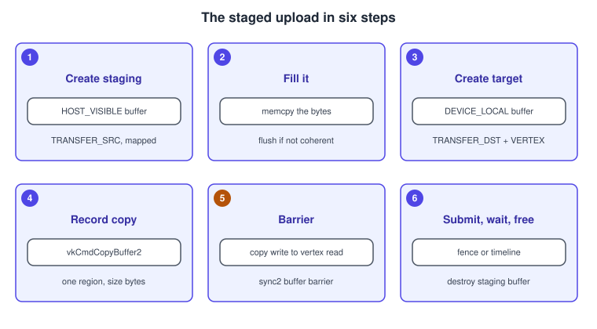
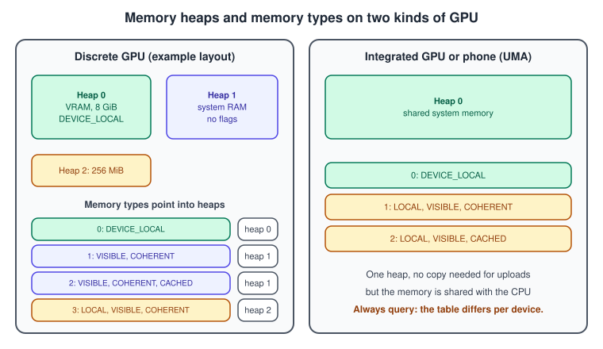
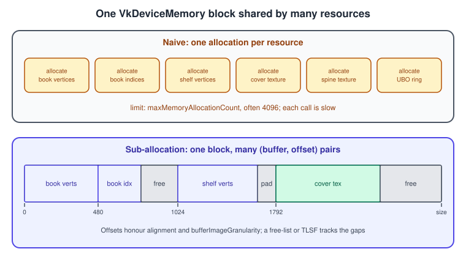
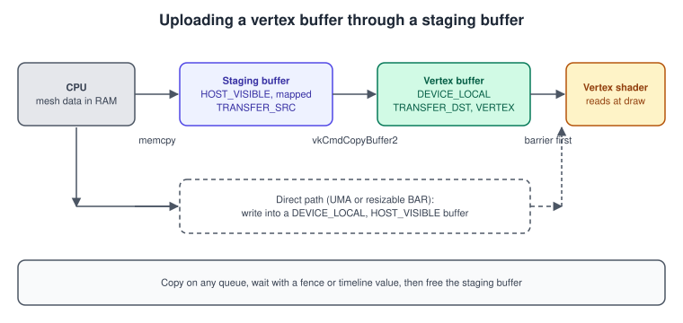

Memory Heaps, Types and VMA
|
This content was generated with the assistance of AI and should be verified against the official documentation before being relied on in production. |
In OpenGL a buffer is a name and the driver decides where its bytes live. In Vulkan a buffer is only a description of a range of bytes, and the application finds memory for it, allocates that memory, binds the two together and decides who may read or write it and when. This is the part of Vulkan that most surprises newcomers, because the API exposes a real model of the machine: heaps of physical memory, memory types that say how each heap can be used, hard limits on the number of allocations, and a difference between memory the GPU likes and memory the CPU can touch. This page explains that model, shows how to query and use it with raw Vulkan, and then shows why almost every real renderer hands the work to the Vulkan Memory Allocator (VMA).
The facts were checked in November 2026. The version documented is Vulkan 1.4 with headers in the 1.4.3xx series and the LunarG SDK 1.4.363.0; the Bookshelf running example needs Vulkan 1.3 at minimum. The allocator library is VMA 3.5.0 (released 26 October 2026) under the MIT licence. The code is C++20 with Vulkan-Hpp RAII for the raw Vulkan parts and the VMA C API for the allocator parts. Everything applies to Windows, Linux, Android and, through MoltenVK or KosmicKrisp, macOS (see Vulkan on Apple: MoltenVK and KosmicKrisp); the memory layouts shown are examples, because every device reports its own.
In the Vulkan Bookshelf running example (C++20, Vulkan-Hpp RAII, VMA, GLFW or SDL3, Slang shaders) this page covers the step where the book box gets a VMA-staged vertex buffer. The data comes from the shared bookshelf.glb. Buffers, images and views, which use the memory described here, are in Buffers, Images and Views; the timeline semaphore that tells the CPU when a staging buffer can be freed is in Timeline Semaphores and Frames in Flight. The general reason for explicit memory is in Explicit vs Implicit APIs, and the hardware background is in GPU Architecture Basics.
What you will see

Heaps and memory types
A Vulkan device reports its memory in two arrays inside VkPhysicalDeviceMemoryProperties, returned by
vkGetPhysicalDeviceMemoryProperties (or vkGetPhysicalDeviceMemoryProperties2, which accepts extension structures such as the
budget below).
-
A memory heap is a physical pool of memory with a size. Each heap has flags;
VK_MEMORY_HEAP_DEVICE_LOCAL_BITmarks memory that is local to the GPU. A discrete GPU typically reports one heap for its video memory, one for system memory the GPU can reach over the bus, and sometimes a third, small heap that is the host-visible window into video memory. Integrated GPUs and phones report a single device-local heap, because CPU and GPU share it. A heap markedVK_MEMORY_HEAP_MULTI_INSTANCE_BITis replicated per physical device in a device group;VK_MEMORY_HEAP_TILE_MEMORY_BIT_QCOMmarks on-chip tile memory on some Qualcomm GPUs. -
A memory type is a combination of property flags and a heap index. Allocations are made from a type, and a type’s flags say how the memory behaves. There are at most 32 memory types (
VK_MAX_MEMORY_TYPES) and 16 heaps (VK_MAX_MEMORY_HEAPS).

The property flags
| Flag | Meaning | Use it for |
|---|---|---|
|
The memory is the most efficient for the device to access. Set only on types of a device-local heap. |
Everything the GPU reads often: vertex and index buffers, textures, render targets, storage buffers. |
|
The host can map it with |
Staging buffers, per-frame uniform data, read-back buffers. |
|
Host writes become visible to the device, and device writes to the host, without explicit flush or invalidate calls. |
Convenience: write through a mapped pointer and forget it. Non-coherent memory needs |
|
Host accesses go through the CPU cache. |
Read-back. Reading uncached, write-combined memory from the CPU can be tens of times slower than reading cached memory. |
|
The device may provide the physical backing lazily, and the memory cannot be host-visible. |
Transient attachments on tile-based GPUs (depth, MSAA, intermediate colour) that never leave tile memory. Pair with |
|
Device-only memory for protected queue operations (DRM-style protected content). |
Protected video and similar. It cannot be host-visible, coherent or cached. |
|
Extension flags ( |
Rare: debugging and coherent device-wide atomics. They carry performance penalties and are listed last. |
The specification guarantees two things that make portable code possible: at least one memory type is both HOST_VISIBLE and
HOST_COHERENT, and at least one memory type is DEVICE_LOCAL. It also orders the types: a type whose flags are a strict subset of
another’s comes first, and types with equal flags are ordered by heap performance. A simple "first type that has the flags I need" loop
therefore picks the least specialised, and usually the best, choice.
Discrete GPUs, integrated GPUs and resizable BAR
On a discrete GPU the video memory is across the PCIe bus. The CPU cannot map it by default, which is why uploads go through a
host-visible staging buffer and a GPU copy. Many systems also expose a small device-local, host-visible window into video memory (historically
256 MiB, the PCI base address register). If the BIOS enables Resizable BAR (called Smart Access Memory on some platforms), the
window can cover the whole of video memory, and the CPU can write directly to device-local memory. The window appears as a memory type
with DEVICE_LOCAL | HOST_VISIBLE | HOST_COHERENT. CPU writes there are write-combined, sequential and slower than local writes, so it
is good for per-frame uniform data and streamed vertex data, not for random access.
On an integrated GPU or a phone the single device-local heap is also host-visible, so a staging buffer is a waste: allocate the
final buffer in a DEVICE_LOCAL | HOST_VISIBLE type, write directly, and pay attention to memory pressure, since the GPU and the rest of the system compete for the same memory.
On a tile-based GPU, as in most phones, LAZILY_ALLOCATED memory saves bandwidth and RAM for attachments that are only needed
within a render pass. See Dynamic Rendering for how storeOp of DONT_CARE completes
the picture.
Choosing a memory type
Every resource tells the application which types it can live in. After creating a buffer or image, call vkGetBufferMemoryRequirements2
or vkGetImageMemoryRequirements2 (core since 1.1). The result is a VkMemoryRequirements with three fields.
| Field | Meaning | Pitfall |
|---|---|---|
|
Bytes the resource needs, which can be larger than the data size (alignment, padding, metadata). |
Allocate |
|
The offset of the resource within a |
Ignoring it works on one GPU and corrupts data on another. Matters as soon as you sub-allocate. |
|
Bit |
The type you want must pass this test as well as the flag test. Linear and optimal images, for example, may differ. |
The standard helper is a search over the types that passes the requirement mask, tries the preferred flags first and falls back to the required ones. The loop below follows the idea given in the specification.
#include <vulkan/vulkan_raii.hpp>
#include <optional>
std::optional<uint32_t> findMemoryType(const vk::PhysicalDeviceMemoryProperties& props,
uint32_t memoryTypeBits,
vk::MemoryPropertyFlags required,
vk::MemoryPropertyFlags preferred = {}) {
// First pass: required and preferred flags together. Second pass: required only.
for (vk::MemoryPropertyFlags want : {required | preferred, required}) {
for (uint32_t i = 0; i < props.memoryTypeCount; ++i) {
const bool allowed = (memoryTypeBits & (1u << i)) != 0;
const bool matches = (props.memoryTypes[i].propertyFlags & want) == want;
if (allowed && matches) return i;
}
}
return std::nullopt;
}
void printMemory(const vk::raii::PhysicalDevice& physical) {
const auto props = physical.getMemoryProperties();
for (uint32_t h = 0; h < props.memoryHeapCount; ++h)
std::printf("heap %u: %llu MiB%s\n", h,
static_cast<unsigned long long>(props.memoryHeaps[h].size >> 20),
(props.memoryHeaps[h].flags & vk::MemoryHeapFlagBits::eDeviceLocal)
? " (device local)" : "");
for (uint32_t t = 0; t < props.memoryTypeCount; ++t)
std::printf("type %u: heap %u, %s\n", t, props.memoryTypes[t].heapIndex,
vk::to_string(props.memoryTypes[t].propertyFlags).c_str());
}vulkaninfo prints the same tables for every device on the machine, which is the quickest way to see what a user’s GPU exposes. The
rest of this page assumes nothing about the layout beyond the two guarantees above.
Allocating, binding and the limits
vkAllocateMemory takes a VkMemoryAllocateInfo (the allocationSize and the memoryTypeIndex) and returns a VkDeviceMemory.
vkBindBufferMemory or vkBindImageMemory then binds a range of that memory, starting at a suitably aligned offset, to a resource.
Binding happens once and cannot be changed; use vkBindBufferMemory2 and vkBindImageMemory2 to bind several at a time or with
extension structures. A VkDeviceMemory can be bound to many resources (sub-allocation) or even to overlapping ones (aliasing).
The limits that make sub-allocation necessary are in VkPhysicalDeviceLimits and the maintenance properties.
| Limit | Value | Consequence |
|---|---|---|
|
At least 4096; some drivers allow more, some Android devices hardly more. |
One allocation per buffer or texture runs out in a content-heavy scene. Allocate large blocks and carve them up. |
|
Reported in |
The largest single |
|
A device-specific number of bytes, often 1 or 1024 or 4096. |
A linear resource (buffer, linear image) and an optimal-tiling image must not share a page of this size within one |
|
Often 64 or 128 bytes. |
Offsets and sizes in flush and invalidate calls must be multiples of it (the size may be |
|
At least 64. |
The pointer returned from |
Allocation is slow because the driver and operating system must find physical pages, make them resident and sometimes zero them. An
application that calls vkAllocateMemory every frame will stutter. The Vulkan Guide’s advice is to create large allocations and manage
them yourself.

Dedicated allocations
Some resources perform better, or are required, to own their VkDeviceMemory. Large render targets and resources that are recreated on
every window resize are the common cases. Query VkMemoryDedicatedRequirements (chained to vkGetBufferMemoryRequirements2 or
vkGetImageMemoryRequirements2, core 1.1): prefersDedicatedAllocation is a hint, requiresDedicatedAllocation is a must. Allocate with a
VkMemoryDedicatedAllocateInfo in the pNext chain naming the resource. Create dedicated allocations early, before the many small ones.
Device addresses and allocation flags
A buffer used with buffer device address (feature bufferDeviceAddress, core 1.2 and required for Vulkan 1.3 devices) needs
VK_BUFFER_USAGE_SHADER_DEVICE_ADDRESS_BIT, and its memory must be allocated with VkMemoryAllocateFlagsInfo carrying
VK_MEMORY_ALLOCATE_DEVICE_ADDRESS_BIT. The bindless and ray tracing pages rely on it
(Bindless: Descriptor Indexing, Buffer and Heap). With VMA,
a single allocator flag adds it to every block.
Mapping, flushing and visibility
vkMapMemory returns a host pointer to a range of a HOST_VISIBLE allocation, and vkUnmapMemory ends the mapping. Vulkan 1.4 promotes
VK_KHR_map_memory2 to core, giving vkMapMemory2 and vkUnmapMemory2, which take structures (VkMemoryMapInfo) so future extensions can
add flags. A memory object can be mapped only once at a time, so mapping each buffer separately is wrong when many buffers share
one allocation. Keep memory persistently mapped: mapping is not free, and unmapping is almost never needed.
For memory without HOST_COHERENT, two calls keep the views consistent: vkFlushMappedMemoryRanges after the host writes and before
the device reads, vkInvalidateMappedMemoryRanges after the device writes and before the host reads. Both take ranges aligned to
nonCoherentAtomSize. Coherent memory skips them, but coherence is only about visibility of the bytes. Ordering is a separate matter: a
host write must still be made visible to the shader stage with a pipeline barrier or the implicit guarantee of queue submission (a
host write before vkQueueSubmit2 is visible to the commands in that submission). The Vulkan memory model, with its availability
and visibility operations, is explained in Synchronization and sync2; it has been a mandatory
part of Vulkan since version 1.3.
// Persistent mapping of a host-visible allocation; flush only when the type is not coherent.
struct MappedBuffer {
vk::raii::Buffer buffer{nullptr};
vk::raii::DeviceMemory memory{nullptr};
void* data = nullptr;
bool coherent = false;
vk::DeviceSize atom = 1; // nonCoherentAtomSize
};
MappedBuffer createMapped(const vk::raii::Device& device,
const vk::raii::PhysicalDevice& physical,
vk::DeviceSize size, vk::BufferUsageFlags usage) {
MappedBuffer out;
out.buffer = vk::raii::Buffer(device, vk::BufferCreateInfo{{}, size, usage});
const auto req = out.buffer.getMemoryRequirements();
const auto props = physical.getMemoryProperties();
const auto type = findMemoryType(props, req.memoryTypeBits,
vk::MemoryPropertyFlagBits::eHostVisible,
vk::MemoryPropertyFlagBits::eHostCoherent);
if (!type) throw std::runtime_error("no host-visible memory type");
out.memory = vk::raii::DeviceMemory(device, vk::MemoryAllocateInfo{req.size, *type});
out.buffer.bindMemory(*out.memory, 0);
out.data = out.memory.mapMemory(0, VK_WHOLE_SIZE);
out.coherent = bool(props.memoryTypes[*type].propertyFlags &
vk::MemoryPropertyFlagBits::eHostCoherent);
out.atom = physical.getProperties().limits.nonCoherentAtomSize;
return out;
}
void writeAndFlush(const vk::raii::Device& device, MappedBuffer& b, const void* src,
vk::DeviceSize offset, vk::DeviceSize size) {
std::memcpy(static_cast<std::byte*>(b.data) + offset, src, size);
if (!b.coherent) {
// Round the range out to nonCoherentAtomSize.
const vk::DeviceSize begin = offset / b.atom * b.atom;
const vk::DeviceSize end = (offset + size + b.atom - 1) / b.atom * b.atom;
vk::MappedMemoryRange range{*b.memory, begin, end - begin};
device.flushMappedMemoryRanges(range);
}
}Source: Vulkan reference: vkMapMemory
The rounding in writeAndFlush can overrun the end of the allocation when the range reaches it; in a real renderer the size passed to the
flush is clamped to VK_WHOLE_SIZE for the final atom, or the buffer size is itself rounded up to the atom size.
Staging buffers
Because device-local memory on a discrete GPU is not host-visible, the way to fill it is a staging buffer: a host-visible buffer with
VK_BUFFER_USAGE_TRANSFER_SRC_BIT that the CPU fills, followed by a copy command into a device-local buffer with
VK_BUFFER_USAGE_TRANSFER_DST_BIT, followed by a barrier that makes the copy visible to the stage that will read the data.

The sequence, with the destination buffer, a one-time command buffer and the modern vkCmdCopyBuffer2 (core 1.3) and synchronization2
barrier:
struct Buffer {
vk::raii::Buffer buffer{nullptr};
vk::raii::DeviceMemory memory{nullptr};
};
Buffer createBuffer(const vk::raii::Device& device, const vk::raii::PhysicalDevice& physical,
vk::DeviceSize size, vk::BufferUsageFlags usage,
vk::MemoryPropertyFlags required) {
Buffer b;
b.buffer = vk::raii::Buffer(device, vk::BufferCreateInfo{{}, size, usage});
const auto req = b.buffer.getMemoryRequirements();
const auto type = findMemoryType(physical.getMemoryProperties(), req.memoryTypeBits, required);
if (!type) throw std::runtime_error("no suitable memory type");
b.memory = vk::raii::DeviceMemory(device, vk::MemoryAllocateInfo{req.size, *type});
b.buffer.bindMemory(*b.memory, 0);
return b;
}
// Upload `bytes` into a new DEVICE_LOCAL buffer. Blocks until the copy finished.
Buffer uploadToDevice(const vk::raii::Device& device, const vk::raii::PhysicalDevice& physical,
vk::raii::Queue& queue, vk::raii::CommandPool& pool,
const void* bytes, vk::DeviceSize size, vk::BufferUsageFlags finalUsage) {
// 1-2. staging buffer, filled through a mapping
Buffer staging = createBuffer(device, physical, size, vk::BufferUsageFlagBits::eTransferSrc,
vk::MemoryPropertyFlagBits::eHostVisible |
vk::MemoryPropertyFlagBits::eHostCoherent);
void* mapped = staging.memory.mapMemory(0, size);
std::memcpy(mapped, bytes, size);
staging.memory.unmapMemory();
// 3. the final buffer
Buffer target = createBuffer(device, physical, size,
finalUsage | vk::BufferUsageFlagBits::eTransferDst,
vk::MemoryPropertyFlagBits::eDeviceLocal);
// 4-5. record copy and barrier
vk::CommandBufferAllocateInfo alloc{*pool, vk::CommandBufferLevel::ePrimary, 1};
vk::raii::CommandBuffers cmds(device, alloc);
vk::raii::CommandBuffer& cmd = cmds.front();
cmd.begin({vk::CommandBufferUsageFlagBits::eOneTimeSubmit});
vk::BufferCopy2 region{0, 0, size};
cmd.copyBuffer2(vk::CopyBufferInfo2{}
.setSrcBuffer(*staging.buffer)
.setDstBuffer(*target.buffer)
.setRegions(region));
vk::BufferMemoryBarrier2 barrier{};
barrier.setSrcStageMask(vk::PipelineStageFlagBits2::eCopy)
.setSrcAccessMask(vk::AccessFlagBits2::eTransferWrite)
.setDstStageMask(vk::PipelineStageFlagBits2::eVertexInput)
.setDstAccessMask(vk::AccessFlagBits2::eVertexAttributeRead)
.setSrcQueueFamilyIndex(VK_QUEUE_FAMILY_IGNORED)
.setDstQueueFamilyIndex(VK_QUEUE_FAMILY_IGNORED)
.setBuffer(*target.buffer).setOffset(0).setSize(VK_WHOLE_SIZE);
cmd.pipelineBarrier2(vk::DependencyInfo{}.setBufferMemoryBarriers(barrier));
cmd.end();
// 6. submit, wait, and let `staging` go out of scope
vk::CommandBufferSubmitInfo cmdInfo{*cmd};
vk::raii::Fence fence(device, vk::FenceCreateInfo{});
queue.submit2(vk::SubmitInfo2{}.setCommandBufferInfos(cmdInfo), *fence);
(void)device.waitForFences(*fence, VK_TRUE, UINT64_MAX);
return target;
}Source: Vulkan Tutorial: Staging buffer
Blocking on a fence per upload is acceptable at load time and wrong in a streaming renderer. A production loader batches many
copies into one command buffer, runs them on a dedicated transfer queue (a queue family with TRANSFER but not GRAPHICS, which maps
to the GPU’s DMA engines on many desktop GPUs), signals a timeline semaphore value when done, and lets the render queue wait for that
value (see Timeline Semaphores and Frames in Flight). Staging
memory is recycled from a ring buffer instead of being created and destroyed per upload. When the transfer and the user queue belong to different
families and the resource was created with exclusive sharing, add the queue-family ownership transfer barriers.
Images follow the same pattern with vkCmdCopyBufferToImage2 and an image layout transition. Vulkan 1.4 adds host image copy
(VK_EXT_host_image_copy, promoted), which copies from host memory to an image without a staging buffer or command buffer on supporting
drivers; it is covered in Buffers, Images and Views.
Budget and priority
Video memory is shared with other applications, and the operating system may move allocations to system memory when it runs short. Two extensions give the application visibility and influence.
-
VK_EXT_memory_budgetaddsVkPhysicalDeviceMemoryBudgetPropertiesEXTto thepNextchain ofvkGetPhysicalDeviceMemoryProperties2. For each heap it reportsheapBudget(how much this process can use right now before the system starts to penalise it) andheapUsage(what it uses). Poll once per frame and shrink caches when usage approaches the budget. -
VK_EXT_memory_priorityadds a priority between 0.0 and 1.0 to allocations (VkMemoryPriorityAllocateInfoEXT). When memory is oversubscribed the operating system evicts lower-priority allocations first. Give render targets and frequently used textures 1.0 and streaming textures a lower value.
void printBudget(const vk::raii::PhysicalDevice& physical) {
auto chain = physical.getMemoryProperties2<vk::PhysicalDeviceMemoryProperties2,
vk::PhysicalDeviceMemoryBudgetPropertiesEXT>();
const auto& props = chain.get<vk::PhysicalDeviceMemoryProperties2>().memoryProperties;
const auto& budget = chain.get<vk::PhysicalDeviceMemoryBudgetPropertiesEXT>();
for (uint32_t h = 0; h < props.memoryHeapCount; ++h)
std::printf("heap %u: using %llu MiB of a %llu MiB budget\n", h,
static_cast<unsigned long long>(budget.heapUsage[h] >> 20),
static_cast<unsigned long long>(budget.heapBudget[h] >> 20));
}Both extensions must be enabled at device creation, and the instance must support the properties2 query (core since Vulkan 1.1).
The Vulkan Memory Allocator
Everything above is mechanical and easy to get subtly wrong: type selection across vendors, alignment, granularity, block sizes, fragmentation,
dedicated allocations, flushing, budgets. The Vulkan Memory Allocator (VMA) from GPUOpen is a single-header C++ library that does it
for you and is used by many shipped Vulkan engines. The current release is 3.5.0 (26 October 2026); the previous
releases added vmaImportVulkanFunctionsFromVolk (3.3.0, May 2026) and VmaAllocationCreateInfo::minAlignment (3.4.0, June 2026).
VMA works by allocating large VkDeviceMemory blocks per memory type (256 MiB by default for large heaps, configurable), sub-allocating
buffers and images from them with a general-purpose algorithm, and falling back to dedicated allocations when it is better. You describe
the intended use with a few flags instead of choosing the memory type.
Setting up the allocator
Define VMA_IMPLEMENTATION in exactly one .cpp file. If Vulkan is loaded dynamically (the usual case with Vulkan-Hpp RAII or volk),
set VMA_STATIC_VULKAN_FUNCTIONS 0 and VMA_DYNAMIC_VULKAN_FUNCTIONS 1, then give VMA the two loader entry points.
// vma_impl.cpp: the only file that defines VMA_IMPLEMENTATION
#define VK_NO_PROTOTYPES
#define VMA_STATIC_VULKAN_FUNCTIONS 0
#define VMA_DYNAMIC_VULKAN_FUNCTIONS 1
#define VMA_IMPLEMENTATION
#include <vk_mem_alloc.h>// allocator.hpp
#include <vulkan/vulkan_raii.hpp>
#include <vk_mem_alloc.h>
#include <memory>
struct AllocatorDeleter {
void operator()(VmaAllocator a) const noexcept { vmaDestroyAllocator(a); }
};
using AllocatorPtr = std::unique_ptr<std::remove_pointer_t<VmaAllocator>, AllocatorDeleter>;
AllocatorPtr createAllocator(const vk::raii::Context& context, const vk::raii::Instance& instance,
const vk::raii::PhysicalDevice& physical,
const vk::raii::Device& device) {
VmaVulkanFunctions funcs{};
funcs.vkGetInstanceProcAddr = context.getDispatcher()->vkGetInstanceProcAddr;
funcs.vkGetDeviceProcAddr = instance.getDispatcher()->vkGetDeviceProcAddr;
VmaAllocatorCreateInfo info{};
info.flags = VMA_ALLOCATOR_CREATE_BUFFER_DEVICE_ADDRESS_BIT | // device address feature on
VMA_ALLOCATOR_CREATE_EXT_MEMORY_BUDGET_BIT; // VK_EXT_memory_budget enabled
info.vulkanApiVersion = VK_API_VERSION_1_3;
info.instance = static_cast<VkInstance>(*instance);
info.physicalDevice = static_cast<VkPhysicalDevice>(*physical);
info.device = static_cast<VkDevice>(*device);
info.pVulkanFunctions = &funcs;
VmaAllocator allocator = nullptr;
if (vmaCreateAllocator(&info, &allocator) != VK_SUCCESS)
throw std::runtime_error("vmaCreateAllocator failed");
return AllocatorPtr(allocator);
}Source: VMA documentation: Quick start
The allocator flags must match what the device actually enabled: VMA_ALLOCATOR_CREATE_BUFFER_DEVICE_ADDRESS_BIT for buffer device address,
VMA_ALLOCATOR_CREATE_EXT_MEMORY_BUDGET_BIT for VK_EXT_memory_budget, VMA_ALLOCATOR_CREATE_EXT_MEMORY_PRIORITY_BIT for
VK_EXT_memory_priority. With volk instead of Vulkan-Hpp, call vmaImportVulkanFunctionsFromVolk. The allocator must be destroyed before the
device.
Describing the use instead of the memory type
With VMA_MEMORY_USAGE_AUTO VMA reads the buffer or image usage flags and picks a type. Two hints refine the choice when the usage
alone is ambiguous: VMA_MEMORY_USAGE_AUTO_PREFER_DEVICE and VMA_MEMORY_USAGE_AUTO_PREFER_HOST. The older values GPU_ONLY, CPU_ONLY,
CPU_TO_GPU and GPU_TO_CPU are deprecated. When the CPU will map the memory, the application must say how, with one of the host-access
flags in VmaAllocationCreateInfo::flags.
| Flag | Meaning |
|---|---|
|
The host writes in order (a memcpy, never reads). Write-combined memory is acceptable and preferred. Staging and uniform buffers. |
|
The host reads or writes at random. Cached memory is chosen. Read-back buffers. |
|
Together with a host-access flag: host-visible memory is welcome, but a device-local fallback is acceptable if the application then uses a staging copy. Selects the BAR type when present. |
|
Map persistently; the pointer is in |
|
Own |
|
Fail instead of exceeding the budget (needs the budget extension). |
|
The memory may be aliased by another resource, so VMA can place it over a transient one. |
|
Trade fragmentation against allocation speed. |
Buffers and the staged upload with VMA
The VMA version of the earlier upload is much shorter, and it chooses memory types, alignment and block placement itself. The wrapper
below owns a buffer and its allocation, and destroys both with vmaDestroyBuffer.
#include <vk_mem_alloc.h>
#include <cstring>
#include <stdexcept>
#include <utility>
class GpuBuffer {
public:
GpuBuffer() = default;
GpuBuffer(VmaAllocator allocator, VkDeviceSize size, VkBufferUsageFlags usage,
VmaAllocationCreateFlags flags, VmaMemoryUsage memUsage = VMA_MEMORY_USAGE_AUTO)
: allocator_(allocator), size_(size) {
VkBufferCreateInfo bci{VK_STRUCTURE_TYPE_BUFFER_CREATE_INFO};
bci.size = size;
bci.usage = usage;
VmaAllocationCreateInfo aci{};
aci.usage = memUsage;
aci.flags = flags;
if (vmaCreateBuffer(allocator_, &bci, &aci, &buffer_, &allocation_, &info_) != VK_SUCCESS)
throw std::runtime_error("vmaCreateBuffer failed");
}
GpuBuffer(GpuBuffer&& o) noexcept { swap(o); }
GpuBuffer& operator=(GpuBuffer&& o) noexcept { GpuBuffer tmp(std::move(o)); swap(tmp); return *this; }
GpuBuffer(const GpuBuffer&) = delete;
GpuBuffer& operator=(const GpuBuffer&) = delete;
~GpuBuffer() { if (buffer_) vmaDestroyBuffer(allocator_, buffer_, allocation_); }
VkBuffer handle() const { return buffer_; }
VkDeviceSize size() const { return size_; }
void* mapped() const { return info_.pMappedData; } // only with MAPPED_BIT
VmaAllocation allocation() const { return allocation_; }
VmaAllocator allocator() const { return allocator_; }
private:
void swap(GpuBuffer& o) noexcept {
std::swap(allocator_, o.allocator_); std::swap(buffer_, o.buffer_);
std::swap(allocation_, o.allocation_); std::swap(info_, o.info_); std::swap(size_, o.size_);
}
VmaAllocator allocator_ = nullptr;
VkBuffer buffer_ = VK_NULL_HANDLE;
VmaAllocation allocation_ = nullptr;
VmaAllocationInfo info_{};
VkDeviceSize size_ = 0;
};
// Device-local vertex buffer filled through a staging buffer; the caller keeps `staging`
// alive until the copy has finished (for example until a timeline value is reached).
struct Upload {
GpuBuffer target;
GpuBuffer staging;
};
Upload recordVertexUpload(VmaAllocator allocator, vk::raii::CommandBuffer& cmd,
const void* bytes, VkDeviceSize size) {
Upload up;
// Staging: host sequential write, persistently mapped, TRANSFER_SRC.
up.staging = GpuBuffer(allocator, size, VK_BUFFER_USAGE_TRANSFER_SRC_BIT,
VMA_ALLOCATION_CREATE_HOST_ACCESS_SEQUENTIAL_WRITE_BIT |
VMA_ALLOCATION_CREATE_MAPPED_BIT);
std::memcpy(up.staging.mapped(), bytes, size);
vmaFlushAllocation(allocator, up.staging.allocation(), 0, VK_WHOLE_SIZE); // no-op if coherent
// Target: no host flags, so VMA picks DEVICE_LOCAL.
up.target = GpuBuffer(allocator, size,
VK_BUFFER_USAGE_VERTEX_BUFFER_BIT | VK_BUFFER_USAGE_TRANSFER_DST_BIT, 0);
vk::BufferCopy2 region{0, 0, size};
cmd.copyBuffer2(vk::CopyBufferInfo2{}
.setSrcBuffer(up.staging.handle())
.setDstBuffer(up.target.handle())
.setRegions(region));
// ...followed by the BufferMemoryBarrier2 shown in the staging section.
return up;
}A per-frame uniform buffer that uses BAR when it exists
The "advanced data uploading" pattern from the VMA documentation covers data the CPU rewrites every frame. VMA is asked for host-visible memory but allowed to return device-local memory instead. After creation the application asks which one it got: with a host-visible result the CPU writes directly, otherwise a staging copy runs.
struct FrameUniforms { // matches the Slang/GLSL block, std140 layout
float viewProj[16];
float lightPos[4];
};
class UniformSlot {
public:
UniformSlot(VmaAllocator allocator)
: buffer_(allocator, sizeof(FrameUniforms),
VK_BUFFER_USAGE_UNIFORM_BUFFER_BIT | VK_BUFFER_USAGE_TRANSFER_DST_BIT,
VMA_ALLOCATION_CREATE_HOST_ACCESS_SEQUENTIAL_WRITE_BIT |
VMA_ALLOCATION_CREATE_HOST_ACCESS_ALLOW_TRANSFER_INSTEAD_BIT |
VMA_ALLOCATION_CREATE_MAPPED_BIT) {
VkMemoryPropertyFlags flags = 0;
vmaGetAllocationMemoryProperties(allocator, buffer_.allocation(), &flags);
hostVisible_ = (flags & VK_MEMORY_PROPERTY_HOST_VISIBLE_BIT) != 0;
if (!hostVisible_)
staging_ = GpuBuffer(allocator, sizeof(FrameUniforms),
VK_BUFFER_USAGE_TRANSFER_SRC_BIT,
VMA_ALLOCATION_CREATE_HOST_ACCESS_SEQUENTIAL_WRITE_BIT |
VMA_ALLOCATION_CREATE_MAPPED_BIT);
}
// Call after the slot's previous frame finished. `cmd` is recording.
void update(vk::raii::CommandBuffer& cmd, const FrameUniforms& u) {
if (hostVisible_) {
vmaCopyMemoryToAllocation(buffer_.allocator(), &u, buffer_.allocation(), 0, sizeof u);
// host write -> shader read is covered by queue submission order, so no barrier here
} else {
vmaCopyMemoryToAllocation(staging_.allocator(), &u, staging_.allocation(), 0, sizeof u);
vk::BufferCopy2 region{0, 0, sizeof u};
cmd.copyBuffer2(vk::CopyBufferInfo2{}
.setSrcBuffer(staging_.handle()).setDstBuffer(buffer_.handle())
.setRegions(region));
// ...transfer write -> uniform read barrier (sync2) goes here
}
}
VkBuffer handle() const { return buffer_.handle(); }
private:
GpuBuffer buffer_, staging_;
bool hostVisible_ = false;
};One UniformSlot exists per frame in flight, indexed by the frame slot, never by the swapchain image. The reason is in
Timeline Semaphores and Frames in Flight. Shader-side layout rules
(why viewProj is 16 floats and lightPos takes a full vec4) are in
Shader Memory Layout.
Images, dedicated memory and priority
Render targets and depth buffers are the textbook case for dedicated allocations. With the memory priority extension enabled and the
VMA_ALLOCATOR_CREATE_EXT_MEMORY_PRIORITY_BIT allocator flag, priority is passed to the driver.
struct GpuImage {
VkImage image = VK_NULL_HANDLE;
VmaAllocation allocation = nullptr;
};
GpuImage createDepthImage(VmaAllocator allocator, uint32_t width, uint32_t height,
VkFormat format, VkSampleCountFlagBits samples) {
VkImageCreateInfo ici{VK_STRUCTURE_TYPE_IMAGE_CREATE_INFO};
ici.imageType = VK_IMAGE_TYPE_2D;
ici.format = format;
ici.extent = {width, height, 1};
ici.mipLevels = 1;
ici.arrayLayers = 1;
ici.samples = samples;
ici.tiling = VK_IMAGE_TILING_OPTIMAL;
ici.usage = VK_IMAGE_USAGE_DEPTH_STENCIL_ATTACHMENT_BIT; // add TRANSIENT_ATTACHMENT_BIT on tilers
ici.initialLayout = VK_IMAGE_LAYOUT_UNDEFINED;
VmaAllocationCreateInfo aci{};
aci.usage = VMA_MEMORY_USAGE_AUTO;
aci.flags = VMA_ALLOCATION_CREATE_DEDICATED_MEMORY_BIT;
aci.priority = 1.0f;
GpuImage out;
if (vmaCreateImage(allocator, &ici, &aci, &out.image, &out.allocation, nullptr) != VK_SUCCESS)
throw std::runtime_error("vmaCreateImage failed");
return out; // release with vmaDestroyImage
}One big mesh buffer with a virtual block
VMA also exposes its allocation algorithm without Vulkan: VmaVirtualBlock manages offsets inside a range of your own. The Bookshelf uses
it to pack every mesh (shelf, book, particle quad) into one large vertex buffer and one index buffer, which later makes indirect drawing and
bindless access simple.
class MeshArena {
public:
explicit MeshArena(VkDeviceSize bytes) {
VmaVirtualBlockCreateInfo info{};
info.size = bytes;
if (vmaCreateVirtualBlock(&info, &block_) != VK_SUCCESS)
throw std::runtime_error("vmaCreateVirtualBlock failed");
}
~MeshArena() { vmaDestroyVirtualBlock(block_); }
MeshArena(const MeshArena&) = delete;
MeshArena& operator=(const MeshArena&) = delete;
// Returns the offset inside the shared buffer, plus the handle needed to free it.
std::pair<VkDeviceSize, VmaVirtualAllocation> allocate(VkDeviceSize size, VkDeviceSize align) {
VmaVirtualAllocationCreateInfo ci{};
ci.size = size;
ci.alignment = align;
VmaVirtualAllocation alloc = nullptr;
VkDeviceSize offset = 0;
if (vmaVirtualAllocate(block_, &ci, &alloc, &offset) != VK_SUCCESS)
throw std::runtime_error("mesh arena is full");
return {offset, alloc};
}
void free(VmaVirtualAllocation alloc) { vmaVirtualFree(block_, alloc); }
private:
VmaVirtualBlock block_ = nullptr;
};Budgets, statistics and defragmentation
-
vmaGetHeapBudgetsfills an array ofVmaBudget(one per heap) with the VMA view ofbudgetandusageplus its own statistics; it is cheap enough to call every frame, and withVK_EXT_memory_budgetit uses the extension’s numbers. -
vmaBuildStatsStringwrites a JSON description of every block and allocation; VMA ships a viewer script for it. Dump it when the budget is unexpectedly full. -
Defragmentation (
vmaBeginDefragmentation,vmaBeginDefragmentationPass,vmaEndDefragmentationPass) moves allocations between blocks to consolidate free space. The application performs the data copies and rebinds resources, so use it for streaming pools between levels, not mid-frame. -
Custom pools (
vmaCreatePool) give a subsystem its own blocks, a fixed block size or a linear algorithm; use one for a ring of per-frame transient data, withVMA_POOL_CREATE_LINEAR_ALGORITHM_BIT. -
Aliasing:
vmaCreateAliasingBufferandvmaCreateAliasingImagecreate a resource over an existing allocation, which is how two render targets that are never live at the same time share one block.
void logBudget(VmaAllocator allocator, const vk::raii::PhysicalDevice& physical) {
const auto props = physical.getMemoryProperties();
VmaBudget budgets[VK_MAX_MEMORY_HEAPS] = {};
vmaGetHeapBudgets(allocator, budgets);
for (uint32_t h = 0; h < props.memoryHeapCount; ++h) {
std::printf("heap %u: allocated %llu MiB in blocks, application budget %llu MiB\n", h,
static_cast<unsigned long long>(budgets[h].statistics.blockBytes >> 20),
static_cast<unsigned long long>(budgets[h].budget >> 20));
}
}Source: VMA documentation: Statistics
Lifetime and ownership
Memory has no garbage collection. A buffer or image may be destroyed or its memory freed only when no pending command buffer refers to it. The two safe patterns are:
-
Deferred destruction. Push the handle and the frame number onto a list; destroy it when the timeline value of that frame has been reached (the same value the slot wait uses). Staging buffers, resized render targets and replaced textures all use this.
-
Frame-slot ownership. A resource that is created per frame slot is destroyed when the slot is, and is reused by the slot’s next frame after the timeline wait.
Vulkan-Hpp RAII handles and the RAII wrapper above give scope-based destruction, but they do not know the GPU is using the object. The rule of the explicit APIs applies: the application, not the destructor, decides when destruction is safe. See also C++ memory management and smart pointers for the language side of RAII.
Putting it together for the Bookshelf
| Resource | Memory choice | Why |
|---|---|---|
Shelf and book vertex and index data |
Device-local, filled once through a staging buffer; sub-allocated from one arena. |
Read many times per frame, written once. |
Per-frame uniforms (camera, lamp) |
|
Rewritten every frame; BAR or UMA gives a direct write. |
Book textures (cover, spine, pages) |
Device-local images, filled from a staging buffer; the PNG textures embedded in bookshelf.glb decoded on the CPU, or KTX2 versions the reader makes with |
Static after load; mipmaps generated after upload. |
Depth buffer and MSAA colour |
Dedicated allocations with priority 1.0; transient on tilers. |
Recreated on resize; the biggest allocations of the scene. |
Particle buffers (dust) |
Device-local storage buffers, GPU-written. |
The compute shader writes and the vertex stage reads; no CPU access. |
Picking read-back |
Host-random-access, mapped, |
The CPU reads one value after the GPU wrote it. |
Common mistakes
-
Allocating per resource. The first scene with a few thousand textures hits
maxMemoryAllocationCount. Use VMA or a block allocator from the start. -
Ignoring
VkMemoryRequirements::size,alignmentormemoryTypeBits. Works on the development GPU, fails elsewhere. -
Mixing linear and optimal resources in a page.
bufferImageGranularityviolations produce subtle corruption on some GPUs. -
Mapping the same allocation twice. A memory object can have one mapping at a time; map the whole block once.
-
Missing flush or invalidate on non-coherent memory. Invisible on desktop GPUs where almost every host-visible type is coherent, and a frequent bug on phones.
-
Reading write-combined memory. A CPU
memcpyback from a mapped upload buffer, or a read loop over it, is dramatically slow. Use a cached type, which VMA picks for the random-access flag. -
Destroying a buffer the GPU still reads. Validation reports a command buffer using a destroyed object. Defer the destruction.
-
Assuming a type layout. Hard-coding "type 0 is device-local" breaks on some devices; always search.
-
Forgetting the barrier after a copy. A transfer write is not visible to the vertex stage without a memory dependency.
-
Using
DEVICE_LOCAL | HOST_VISIBLEfor random CPU reads. BAR memory is uncached for the CPU. -
Leaking at shutdown. VMA asserts on leaked allocations in debug builds and the validation layer reports leaked objects; destroy all buffers and images before
vmaDestroyAllocator.
Performance notes
-
Use few, large blocks. The default of 256 MiB for large heaps is a good start; lower it for small-memory devices (phones).
-
Keep static data device-local and write dynamic data sequentially. The CPU should write forward through a mapped pointer, in large chunks, and never read.
-
Reuse staging memory with a ring buffer; creating a staging buffer per texture is the usual source of load-time spikes.
-
Use a dedicated transfer queue for streaming so uploads do not compete with the render queue for the same hardware queue, where the device has one.
-
On tile-based GPUs, make attachments
TRANSIENT_ATTACHMENTinLAZILY_ALLOCATEDmemory (with VMA, request it withrequiredFlagsinVmaAllocationCreateInfo) and avoidSTOREfor what is not read later. -
Watch the budget with
vmaGetHeapBudgetsand the memory priorities; going over the budget leads to paging and frame-time spikes long before an allocation fails.
What changed, with dates
| When | Change | Consequence |
|---|---|---|
February 2016 |
Vulkan 1.0: heaps, types, |
The model both 2016 books teach. |
2017 |
The Vulkan Memory Allocator is first published by GPUOpen. |
It becomes the de facto allocator of Vulkan engines. |
January 2018 (Vulkan 1.1) |
|
Dedicated allocation hints are standard. |
January 2020 (Vulkan 1.2) |
Buffer device address is core. |
Allocations may need |
January 2022 (Vulkan 1.3) |
|
The upload code on this page uses them. |
December 2024 (Vulkan 1.4) |
|
Direct image uploads on drivers that support it. |
2022 and later |
Resizable BAR spreads on desktop GPUs; VMA gains |
A fast direct path for per-frame data. |
May to October 2026 |
VMA 3.3.0 to 3.5.0: |
Easier integration with volk; see the release notes before upgrading. |
Where the 2016 books are outdated
| Book and chapter | What it teaches | Today |
|---|---|---|
VPG chapter 2, VCB chapter 4 |
One |
Sub-allocation from large blocks, normally through VMA, because of |
VPG chapter 2 and 4, VCB chapter 4 |
Memory type selection by hand, host-visible staging for everything. |
Still valid as a mechanism, but resizable BAR and unified memory offer direct paths, and VMA selects the type from usage flags. |
VCB chapter 4 |
|
|
VPG chapter 2, VCB chapter 4 |
No mention of device addresses. |
Buffer device address (core 1.2) needs an allocation flag and is central to bindless designs. |
Both |
No memory budget or priority. |
|
Both |
Sparse resources as a mapping feature. |
Still available as optional features (see Buffers, Images and Views); most renderers use virtual-texture schemes on top of ordinary memory instead. |
See it in
-
Explicit vs Implicit APIs for the general case against hidden memory management.
-
GPU Architecture Basics for caches, tiles and memory hierarchy.
-
Buffers and Vertex Descriptors in Metal for storage modes, the Metal counterpart of heap and type choice.
-
Buffers, Images and Views for what is created on top of this memory.
-
Bookshelf, Part 1: Triangle to Textured Book where the staged upload runs.
References
-
Vulkan Guide, Memory Allocation: https://docs.vulkan.org/guide/latest/memory_allocation.html
-
Vulkan specification, Memory Allocation: https://docs.vulkan.org/spec/latest/chapters/memory.html
-
Vulkan reference page, vkMapMemory: https://registry.khronos.org/vulkan/specs/latest/man/html/vkMapMemory.html
-
Vulkan reference page, vkMapMemory2: https://registry.khronos.org/vulkan/specs/latest/man/html/vkMapMemory2.html
-
Vulkan reference page, vkCmdCopyBuffer2: https://registry.khronos.org/vulkan/specs/latest/man/html/vkCmdCopyBuffer2.html
-
Vulkan reference page, VK_EXT_memory_budget: https://registry.khronos.org/vulkan/specs/latest/man/html/VK_EXT_memory_budget.html
-
Vulkan Tutorial, Staging buffer: https://docs.vulkan.org/tutorial/latest/04_Vertex_buffers/02_Staging_buffer.html
-
Vulkan specification, versions appendix: https://docs.vulkan.org/spec/latest/appendices/versions.html
-
Vulkan Memory Allocator (GPUOpen): https://gpuopen.com/vulkan-memory-allocator/
-
VMA documentation: https://gpuopen-librariesandsdks.github.io/VulkanMemoryAllocator/html/index.html
-
VMA documentation, Choosing memory type: https://gpuopen-librariesandsdks.github.io/VulkanMemoryAllocator/html/choosing_memory_type.html
-
VMA releases: https://github.com/GPUOpen-LibrariesAndSDKs/VulkanMemoryAllocator/releases
-
Vulkan Programming Guide (InformIT): https://www.informit.com/store/vulkan-programming-guide-the-official-guide-to-learning-9780134464541
-
Vulkan Cookbook (Packt): https://www.packtpub.com/en-us/product/vulkan-cookbook-9781786468154